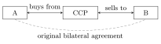

1 An introduction to financial markets
This course is about valuing financial contracts and managing their risks with mathematical models. Before any model, we need the institutional picture: what is traded, where, how counterparty risk is controlled, and how money at different dates is compared. This chapter covers the four asset classes, exchange-traded and over-the-counter markets, clearing houses and the margin mechanism, and the arithmetic of interest rates — compounding, discounting, bond pricing and the bootstrap of the zero curve.
1.1 Why study financial markets mathematically
Modern finance raises a few recurring questions: how do markets work, what are the main sources of risk, which instruments are available and how can they be used, and — the focus of this course — how to value complex contracts and manage their risks. Probability is the natural language for risk, and a mathematical model gives rigorous, quantitative answers; but no model is perfect, and a recurring theme will be to understand what each model leaves out.
A few facts motivate the effort:
- Markets are largely automated. The trading floor of the NYSE is today “largely a TV studio” (Financial Times, 2021); most orders are generated by algorithms, sometimes at high frequency. On 23 April 2013 a fake tweet from the Associated Press account about explosions at the White House caused a flash crash of the US market within seconds.
- Interbank risk is real. Before 2007 the spread between Euribor and overnight-indexed (OIS) rates of the same maturity was negligible; it exploded during the 2007–2009 financial crisis and again during the 2010–2012 European debt crisis, revealing that lending between banks is not risk-free (Chapter 8).
- Derivatives are huge. The derivatives market was essentially non-existent before 1973; its notional size today is a multiple of world GDP.
- Derivatives are everywhere. Many common products embed derivatives: a floating-rate mortgage with an option to switch to a fixed rate (an interest-rate swaption), life insurance with a guaranteed return (a put option on a portfolio), equity-linked insurance (an equity option), convertible bonds (a call option on the issuer’s stock), callable bonds (an issuer’s call option), retail structured notes (custom option packages). Each such product is “base asset + derivatives”, its valuation requires option-pricing techniques, and accounting standards (IFRS) require the embedded derivatives to be recognised separately.
1.2 Asset classes
The securities traded in financial markets fall into four main categories.
- Stocks. A share gives the right to part of the cash flows of a company, paid as dividends. Its price can be decomposed as the net present value of expected future dividends plus a resale value.
- Fixed-income securities (bonds). They pay predetermined amounts at predetermined dates in a given currency; their price is essentially determined by interest rates.
- Currencies (EUR, USD, GBP, JPY, CHF, …). Holding a currency gives the right to earn the interest rate of bank deposits in that currency; currencies are related by exchange rates.
- Derivatives (forwards, futures, options, swaps, …). A derivative is a contract whose value is derived from another asset, the underlying; its price must be consistent with that of the underlying.
Other traded assets — commodities, energy, weather derivatives — exist, but the course focuses on financial assets.
1.3 Exchange-traded markets
An exchange-traded market is an organised market where agents trade standardised contracts whose features are defined by the exchange. All stocks and currencies, and many (not all) bonds and derivatives, are exchange-traded. Major derivatives exchanges include the Chicago Board of Trade (1848, now part of the CME group), the Chicago Board Options Exchange (CBOE, 1973) and Eurex (1998, owned by Deutsche Börse, one of the first fully electronic platforms, with more than 7 million contracts traded daily).
Investors submit orders of different types:
- a market order is executed immediately at the best available price;
- a limit order specifies the price at which the trader is willing to trade, at the risk of delayed or no execution.
1.3.1 Clearing houses
Exchanges protect participants against counterparty risk — the risk that the other side of a trade defaults — through a clearing house:
- every transaction is centralised: each trade is split into two trades with the clearing house;
- traders deposit funds (margins) to guarantee that they can meet their future obligations;
- members also contribute to a common guarantee fund.
Trader A agrees with trader B to buy 1m USD from B in one year. In practice A contracts with the clearing house to buy 1m USD in one year, and B contracts with the clearing house to sell 1m USD in one year. If B defaults, A still receives the dollars from the clearing house. The clearing house’s exposure is covered by the margins posted by A and B and, as a last resort, by the guarantee fund.

Figure: a central counterparty (or clearing house) interposes itself in every trade, so that each party faces only the CCP.
1.4 Over-the-counter markets
Many derivatives are traded over the counter (OTC): bilateral transactions between banks, funds and corporations, with tailor-made terms. An OTC trade can be handled either
- bilaterally, through a master agreement detailing all mutual obligations, including when the transaction can be terminated; or
- through a central counterparty (CCP), which, like an exchange’s clearing house, stands between the two parties so that neither bears the other’s default risk.
Exchange-traded markets have more transactions; OTC markets have larger average trade size and larger total volume.
Before and after 2008. Before the 2007–2009 crisis the OTC market was largely unregulated, mostly bilateral, and grew enormously from 2000 to 2007; Lehman Brothers alone had over one million outstanding OTC transactions with more than 8000 counterparties when it failed. Today, in the US, standardised OTC derivatives must whenever possible be traded on swap execution facilities (exchange-like platforms with posted quotes), all trades must be reported to a central repository, and a CCP must be used for most derivatives between financial institutions (similar rules apply in the EU under EMIR). The goals are to reduce counterparty and systemic risk and to increase transparency.
1.4.1 The margin mechanism
How does a CCP control the default risk it takes on? Through daily marking to market: every day each position is revalued at the current settlement price, gains and losses are credited to or debited from the trader’s margin account, and the account must stay above a maintenance margin; if it falls below, the trader receives a margin call to top it up to the initial margin.
A trader buys futures on 20 units of an asset at the futures price of 5000 € per unit for delivery in one year. The initial margin is 12 000 €, the maintenance margin 9000 €.
| day | futures price | daily gain | cumulative gain | margin account | margin call |
|---|---|---|---|---|---|
| 0 | 5000 | 12 000 | |||
| 1 | 4970 | −600 | −600 | 11 400 | |
| 2 | 4900 | −1400 | −2000 | 10 000 | |
| 3 | 4950 | +1000 | −1000 | 11 000 | |
| 4 | 4830 | −2400 | −3400 | 8600 | 3400 |
| 5 | 4800 | −600 | −4000 | 11 400 | |
| 6 | 4850 | +1000 | −3000 | 12 400 | |
| 7 | 4780 | −1400 | −4400 | 11 000 | |
| 8 (1y) | 4870 | +1800 | −2600 | 12 800 |
On day 4 the account falls below 9000 € and the trader must deposit 3400 € to restore 12 000 €. At maturity the total result is \((4870 - 5000)\times 20 = -2600\) €, and it has been realised day by day: \(12\,800 - 12\,000 - 3400 = -2600\) €. If the trader had failed to meet the margin call, the position would have been closed using the margin already posted — the CCP never loses more than one day’s price move beyond the margin.
1.5 Interest rates and compounding
Depositing \(A\) € for one year, how much do we get? It depends on the interest rate \(R\) (in % per year) and on the compounding frequency \(m\) (how many times per year interest is credited):
- \(R = 8\%\), annual compounding (\(m = 1\)): \(A \mapsto A(1.08)\);
- semiannual (\(m = 2\)): \(A \mapsto A(1 + 0.08/2)^2\);
- quarterly (\(m = 4\)): \(A \mapsto A(1 + 0.08/4)^4\).
With rate \(R\) and compounding frequency \(m\), an amount \(A\) grows in \(T\) years to \[A\Bigl(1 + \frac{R}{m}\Bigr)^{mT}.\]
The map \(m \mapsto A(1 + R/m)^{mT}\) is increasing: more frequent compounding pays interest on interest sooner. Two rates are equivalent if they produce the same wealth. Given \(R_1\) with frequency \(m_1\), the equivalent rate with frequency \(m_2\) solves \((1 + R_1/m_1)^{m_1} = (1 + R_2/m_2)^{m_2}\): \[R_2 = m_2\Bigl[\Bigl(1 + \frac{R_1}{m_1}\Bigr)^{m_1/m_2} - 1\Bigr].\]
Letting \(m \to \infty\), \((1 + R/m)^m \to e^R\): with a continuously compounded rate \(R\), an amount \(A\) grows to \(Ae^{RT}\) in \(T\) years. The continuously compounded rate equivalent to \(R_1\) with frequency \(m_1\) is \[R_c = m_1\log\Bigl(1 + \frac{R_1}{m_1}\Bigr), \qquad R_1 = m_1\bigl(e^{R_c/m_1} - 1\bigr).\]
Daily compounding is already very close: with \(R = 5\%\), \((1 + 0.05/365)^{365} = 1.051267\) against \(e^{0.05} = 1.051271\).
- \(8\%\) with quarterly compounding is equivalent to \((1 + 0.08/4)^4 - 1 = 8.243\%\) with annual compounding.
- \(10\%\) with semiannual compounding is equivalent to \(2\log(1.05) = 9.758\%\) continuously compounded.
- \(8\%\) continuously compounded is equivalent to \(4(e^{0.02} - 1) = 8.08\%\) with quarterly compounding.
From now on, unless stated otherwise, rates are continuously compounded (mathematically the most convenient) and \(\log\) is the natural logarithm.
1.6 Discounting
The reverse question: what is a future cash flow worth today?
If \(A\) € will be received in \(T\) years and the continuously compounded rate is \(R\), its present value is \(Ae^{-RT}\) €. Indeed, depositing \(Ae^{-RT}\) today yields exactly \(A\) in \(T\) years.
This reasoning assumes no risk: the rate does not change and the future cash flow is known for sure. Random cash flows require the probabilistic machinery of the following chapters.
1.7 Bonds and the zero curve
A zero-coupon bond (ZCB) with maturity \(T\) pays one unit of money at \(T\) and nothing before. A coupon bond with maturity \(T\), coupon rate \(c\) and payment frequency \(m\) pays \(c/m\) every \(1/m\) years and, at \(T\), the principal \(1\) plus the last coupon.
For example, a 3-year bond paying a 10% coupon semiannually pays \(0.05\) every six months and \(1.05\) at \(T = 3\). For a principal \(N\) all prices scale by \(N\).
Interest rates depend on the horizon, which leads to the central object of fixed income.
The \(T\)-year zero rate \(R_0(T)\) is the rate applying to an investment from today to \(T\) with no intermediate payments: \(1\) € invested today becomes \(e^{T R_0(T)}\) € at \(T\), and \(1\) € paid at \(T\) is worth \(e^{-T R_0(T)}\) € today. The map \(T \mapsto R_0(T)\) is the zero curve (or yield curve).
The price of a bond is obtained by discounting each cash flow at the zero rate of its payment date: \[P_0(T) = e^{-T R_0(T)}, \qquad P_0(T, c, m) = \frac cm\sum_{k=1}^{mT}e^{-\frac km R_0\left(\frac km\right)} + e^{-T R_0(T)} = \frac cm\sum_{k=1}^{mT}P_0\Bigl(\frac km\Bigr) + P_0(T).\]
The second form shows that a coupon bond is a portfolio of zero-coupon bonds — a first instance of static replication.
With zero rates \(R_0(0.5) = 5.0\%\), \(R_0(1) = 5.8\%\), \(R_0(1.5) = 6.4\%\), \(R_0(2) = 6.8\%\), a bond with principal \(100\), maturity \(2\) years and 6% coupon paid semiannually is worth \[3e^{-0.5\times0.05} + 3e^{-1\times0.058} + 3e^{-1.5\times0.064} + 103e^{-2\times0.068} = 98.39 .\]
1.7.1 Bootstrapping the zero curve
In practice zero rates are not observed directly; they are extracted from bond prices by the bootstrap: price the bonds in order of increasing maturity, each time solving for the one new unknown rate.
Market prices (principal 100, coupons paid semiannually):
| maturity | coupon rate | price |
|---|---|---|
| 0.25 | 0 | 99.6 |
| 0.5 | 0 | 99.0 |
| 1 | 0 | 97.8 |
| 1.5 | 4% | 102.5 |
| 2 | 5% | 105.0 |
The zero-coupon bonds give the short rates directly: \(99.6 = 100e^{-0.25R_0(0.25)}\), so \(R_0(0.25) = 1.603\%\); similarly \(R_0(0.5) = 2.010\%\) and \(R_0(1) = 2.225\%\). For \(1.5\) years, using the rates already found, \[102.5 = 2e^{-0.5R_0(0.5)} + 2e^{-R_0(1)} + 102e^{-1.5R_0(1.5)} \quad\Longrightarrow\quad R_0(1.5) = 2.284\%,\] and for 2 years, \[105 = 2.5e^{-0.5R_0(0.5)} + 2.5e^{-R_0(1)} + 2.5e^{-1.5R_0(1.5)} + 102.5e^{-2R_0(2)} \quad\Longrightarrow\quad R_0(2) = 2.416\%.\] (The course slides print \(2.461\%\); solving the equation gives \(2.416\%\).)
Figure: bootstrapped zero curve, linearly interpolated between the bond maturities and assumed flat outside them.
Outside the range of observed maturities the curve has to be extrapolated (here: flat); between them it must be interpolated. The choice of interpolation is a modelling decision with real consequences — Chapter 9 revisits it for modern risk-free-rate curves.
1.8 Forward rates and par yields
Zero rates for different maturities imply the rates that can be locked in today for future periods.
With continuously compounded zero rates \(R_1 = R_0(T_1)\) and \(R_2 = R_0(T_2)\), \(T_1 < T_2\), the forward rate for the period \([T_1, T_2]\) is \[R_F = \frac{R_2T_2 - R_1T_1}{T_2 - T_1} = R_2 + (R_2 - R_1)\frac{T_1}{T_2 - T_1}.\]
Proof. Investing for \(T_2\) years yields \(e^{R_2T_2}\); investing for \(T_1\) years and rolling over at the forward rate yields \(e^{R_1T_1}e^{R_F(T_2 - T_1)}\). Absence of arbitrage forces the two to coincide. \(\square\)
The second form shows that when the zero curve is increasing, forward rates lie above zero rates; letting \(T_2 \to T_1\) gives the instantaneous forward rate \(f(T) = R_0(T) + T\,R_0'(T)\), studied in Chapter 8.
The par yield for maturity \(T\) is the coupon rate \(c\) that makes a bond’s price equal to its principal. With coupons paid \(m\) times a year and \(A = \sum_{k=1}^{mT}P_0(k/m)\), the condition \(\frac cm\,100\,A + 100\,P_0(T) = 100\) gives \[c = \frac{m\bigl(1 - P_0(T)\bigr)}{A}.\]
This is the same formula as the swap rate of Chapter 8: a par bond and a swap are two views of the same cash flows. For an increasing curve, par yield \(\leq\) zero rate \(\leq\) forward rate (Björk, Exercise 22.5).
1.9 Duration and convexity
How sensitive is a bond’s price to interest rates? Let a bond pay \(c_i\) at times \(t_i\) and have yield \(y\) (the single continuously compounded rate that discounts all cash flows to the market price): \(B = \sum_ic_ie^{-yt_i}\).
The (Macaulay) duration and the convexity of the bond are \[D = \frac{1}{B}\sum_it_i\,c_ie^{-yt_i} = -\frac{1}{B}\frac{dB}{dy}, \qquad C = \frac{1}{B}\sum_it_i^2\,c_ie^{-yt_i} = \frac{1}{B}\frac{d^2B}{dy^2}.\]
\(D\) is a weighted average of the payment times, with weights the present values of the cash flows: a zero-coupon bond has duration equal to its maturity. A second-order Taylor expansion gives \[\frac{\Delta B}{B} \approx -D\,\Delta y + \frac12C\,(\Delta y)^2 .\] Duration measures the first-order sensitivity to a parallel shift of the yield curve; convexity corrects for curvature (bond prices are convex in the yield, so the linear approximation always underestimates the price). With non-continuous compounding the derivative gives the modified duration \(D/(1 + y/m)\). Portfolio durations are value-weighted averages, which makes duration the basic tool of immunisation: matching the duration of assets and liabilities (Chapter 9). Its limitations: it only captures parallel shifts, and for large moves the convexity term matters.
1.10 Exercises
Problems from Hull, Options, Futures, and Other Derivatives (numbering of the 11th edition).
(Hull 2.1) You enter into a short futures contract to sell July silver at $17.20 per ounce. The contract is for 5000 ounces; the initial margin is $4000 and the maintenance margin $3000. What change in the futures price leads to a margin call? What happens if you do not meet it?
Solution. A short position loses when the price rises. A margin call occurs when the loss exceeds \(4000 - 3000 = 1000\), i.e. a price rise of \(1000/5000 = 0.20\): a futures price above $17.40. If the call is not met, the broker closes out the position.
(Hull 2.11) At the end of one day a clearing house member is long 100 contracts with settlement price $50 000 each; the original margin is $2000 per contract. The next day the member clears 20 additional long contracts entered at $51 000. The settlement price at the end of that day is $50 200. How much must the member add to its margin account?
Solution. New contracts require initial margin \(20 \times 2000 = 40\,000\). Variation margin: the old position gains \(100 \times 200 = 20\,000\); the new contracts lose \(20 \times 800 = 16\,000\); net gain \(4000\). The member must add \(40\,000 - 4000 = 36\,000\).
(Hull 4.1, 4.8) A bank quotes 7% per annum with quarterly compounding. Find the equivalent rate with continuous and with annual compounding. Which continuous rate is equivalent to 8% with monthly compounding?
Solution. Continuous: \(4\log(1.0175) = 6.939\%\); annual: \(1.0175^4 - 1 = 7.186\%\). For 8% monthly: \(12\log(1 + 0.08/12) = 7.973\%\).
(Hull 4.4) Continuously compounded zero rates for 3, 6, 9, 12, 15, 18 months are 3.0, 3.2, 3.4, 3.5, 3.6, 3.7%. Compute the forward rates for the second to sixth quarters.
Solution. With \(R_F = (R_2T_2 - R_1T_1)/(T_2 - T_1)\): second quarter \((3.2\times0.5 - 3.0\times0.25)/0.25 = 3.4\%\); then \(3.8\%\), \(3.8\%\), \(4.0\%\), \(4.2\%\).
(Hull 4.10) Zero rates for 6, 12, 18, 24, 30 months are 4.0, 4.2, 4.4, 4.6, 4.8% (continuous). Price a 30-month bond with face value 100 paying a 4% coupon semiannually.
Solution. \(2e^{-0.04\times0.5} + 2e^{-0.042} + 2e^{-0.044\times1.5} + 2e^{-0.046\times2} + 102e^{-0.048\times2.5} = 98.04\).
(Hull 4.12) The 6-, 12-, 18- and 24-month zero rates are 5, 6, 6.5 and 7% (continuous). What is the 2-year par yield (semiannual coupons)?
Solution. \(A = e^{-0.025} + e^{-0.06} + e^{-0.0975} + e^{-0.14} = 3.6935\) and \(P_0(2) = e^{-0.14} = 0.8694\), so \(c = 2(1 - 0.8694)/3.6935 = 7.07\%\).
(Hull 4.14) A 10-year 8% coupon bond sells for 90 and a 10-year 4% coupon bond for 80 (same payment dates). What is the 10-year zero rate?
Solution. Two 4% bonds minus one 8% bond: the coupons cancel and the portfolio pays \(2\times100 - 100 = 100\) at year 10, costing \(2\times80 - 90 = 70\). So \(100e^{-10R} = 70\) and \(R = \log(100/70)/10 = 3.567\%\).
(Hull 4.18) A 5-year bond with yield 7% (continuous) pays an 8% annual coupon. Find its price, duration and the price change predicted by duration for a 0.2% decrease in yield; compare with the exact change and with the convexity-corrected estimate.
Solution. \(B = 8\sum_{t=1}^4e^{-0.07t} + 108e^{-0.35} = 103.05\). Duration \(D = \frac{1}{B}\sum_tt\,c_te^{-0.07t} = 4.323\) years. Prediction: \(\Delta B \approx -103.05 \times 4.323 \times (-0.002) = 0.891\). Exact: repricing at 6.8% gives \(+0.895\). Convexity \(C = 20.31\) adds \(\tfrac12 \times 103.05 \times 20.31 \times 0.002^2 = 0.004\), giving \(0.895\).
(Hull 4.19) Treasury bills maturing in 6 and 12 months cost 94.0 and 89.0 (face 100). A 1.5-year bond paying $4 every six months costs 94.84; a 2-year bond paying $5 every six months costs 97.12. Bootstrap the continuously compounded zero rates.
Solution. \(R(0.5) = 2\log(100/94) = 12.375\%\), \(R(1) = \log(100/89) = 11.653\%\). Then \(4e^{-0.5R(0.5)} + 4e^{-R(1)} + 104e^{-1.5R} = 94.84\) gives \(R(1.5) = 11.502\%\), and the 2-year bond gives \(R(2) = 11.299\%\): a downward-sloping curve.
(Hull 4.6, 4.16) For an upward-sloping term structure, order (a) the 5-year zero rate, (b) the yield of a 5-year coupon bond, (c) the forward rate for \([4.75, 5]\). What changes if the curve slopes downward?
Solution. Upward: (c) > (a) > (b). The coupon bond’s yield is an average of zero rates over all payment dates, weighted towards earlier (lower) ones; the forward rate is the marginal rate at the long end. For a downward-sloping curve the order is reversed: (b) > (a) > (c).
1.11 Sources
Prof. Fontana, Stochastic Finance slides, slides_intro and Chapter 1 (slides_1), and the handwritten lecture notes of 8 October 2025 (clearing houses, marking to market, compounding, bond pricing). Hull, Options, Futures, and Other Derivatives, Sections 1.1–1.2 (markets), 2.4–2.5 and 2.8 (clearing, margins, orders) and Chapter 4 (interest rates and bonds).